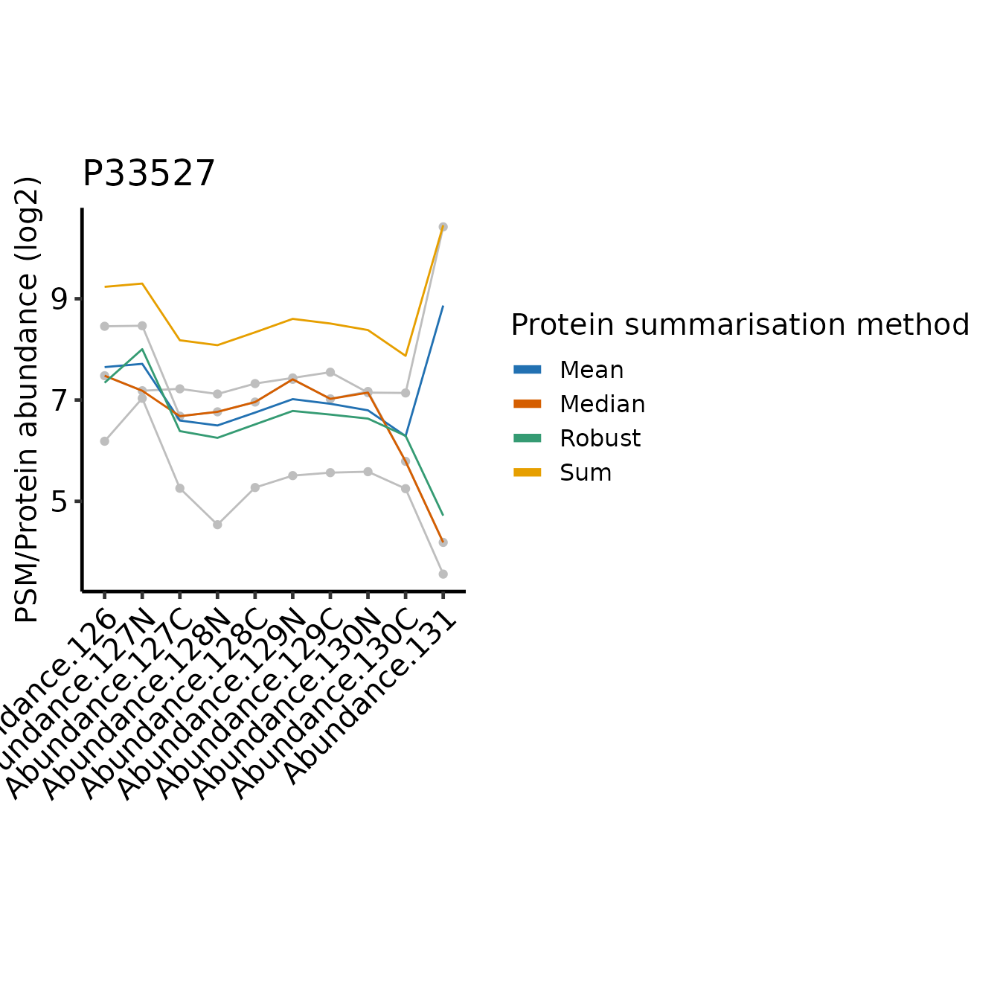
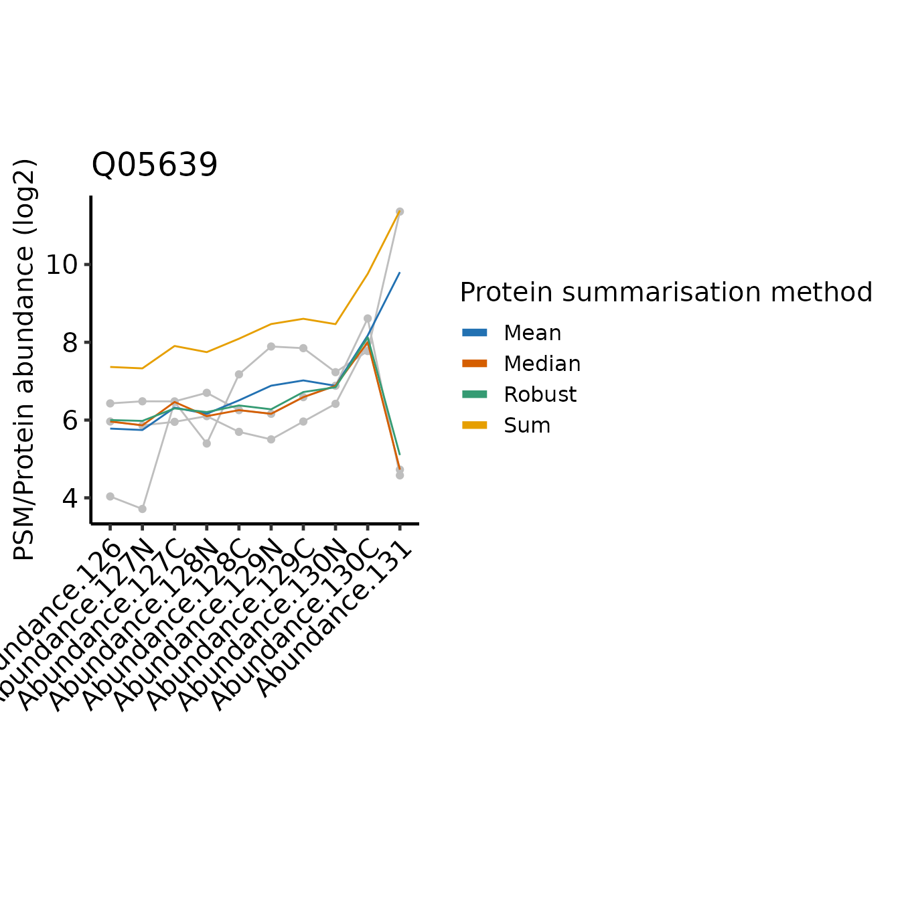
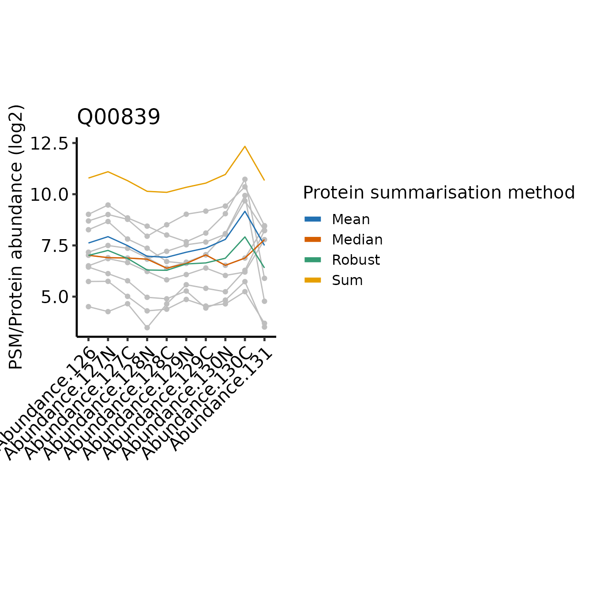
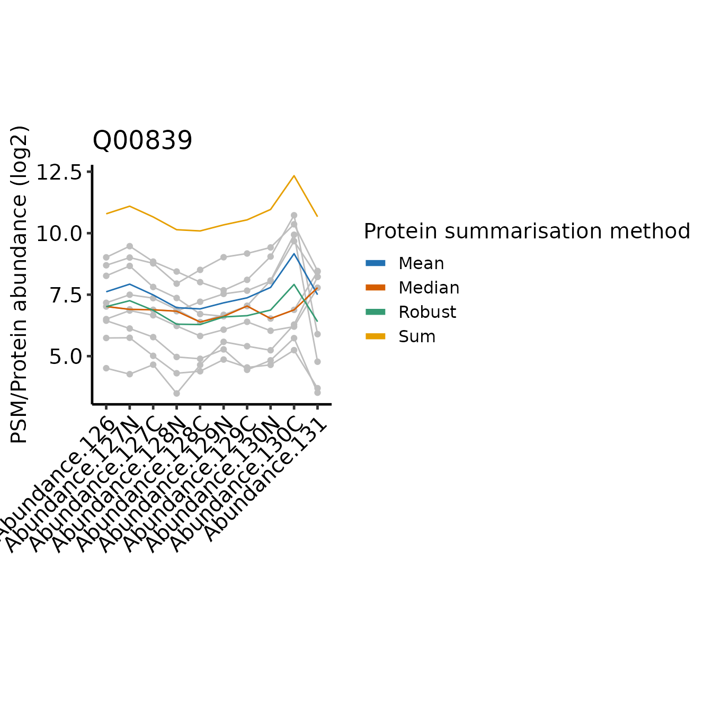

TMT - comparing protein summarisation approaches
Tom Smith
2025-07-07
TMT_summarisation_methods.RmdHere, we will consider different protein summarisation approaches for TMT data, depending on whether missing values need to be retained. The comparison between summarisation approaches is also informative when considering what it means to summarise from PSMs to protein-level abundances.
For PSM to protein summarisation with TMT quantification, simply
summing together the PSM-level abundances provides accurate estimates,
so long as there are no missing values. If many missing values are
present, the MsCoreUtils::robustSummary method may be
preferred, since it is able to summarise accurately, even in the
presence of missing values (Sticker et al.
2020).
Load required packages
To clarify which functionality is provided by which package, we will
use package::function. For your own code, there is no need
to specify the package unless you want to maintain this clarity.
tmt_qf is a QFeatures object available from
the biomasslmb package which was generated in the
TMT QC PSM-level quantification and summarisation to protein-level abundance
vignette. It already contains protein-level quantification from a simple
‘sum’ summarisation, where missing values were removed and proteins with
a single PSM were removed. Here, we will compare this with the ‘robust’
summaristion, which requires some additional steps to ensure it is
performed appropriately.
Summarisation with robustSummary
With robustSummary, we do not need to remove all PSMs
with missing values since the summarisation algorithm deals with them
appropriately. However, we still don’t want to retain PSMs with too many
missing values, since these will not be very informative in estimating
the protein-level quantification. Here, we will retain PSMs with at most
5/10 missing values
tmt_qf[['psms_filtered_forRobust']] <- QFeatures::filterNA(
tmt_qf[['psms_filtered_rank']], 5/10)Next, we remove PSMs for proteins with fewer than 2 PSMs.
min_psms <- 2
tmt_qf[['psms_filtered_forRobust']] <- biomasslmb::filter_features_per_protein(
tmt_qf[['psms_filtered_forRobust']], min_features = min_psms)For the robustSummary summarisation, we need our
quantification values to be approximately Gaussian distributed. Hence,
we log transform them.
tmt_qf[['psms_filtered_forRobust']] <- QFeatures::logTransform(
tmt_qf[['psms_filtered_forRobust']], base=2)Now we can summarise with robustSummary
# Aggregate to protein-level abundances (using QFeatures function)
tmt_qf <- QFeatures::aggregateFeatures(tmt_qf,
i = "psms_filtered_forRobust",
fcol = "Master.Protein.Accessions",
name = "protein_robust",
fun = MsCoreUtils::robustSummary,
maxit=1000)
#> Your quantitative data contain missing values. Please read the relevant
#> section(s) in the aggregateFeatures manual page regarding the effects
#> of missing values on data aggregation.Prior to summaristaion, we removed PSMs from proteins with fewer than
2 PSMs. However, since we left in PSMs with missing values, it’s
possible for some protein-level abundances to be derived from just a
single PSM. We can use the get_protein_no_quant_mask from
biomasslmb to identify where the protein abundances will be
derived from fewer than n features (PSMs). We can then give
this mask to mask_protein_level_quant to replace these
quantification values with NA.
# plot = TRUE means we will also get a plot of the number of proteins quantified in each sample
protein_retain_mask <- biomasslmb::get_protein_no_quant_mask(
tmt_qf[['psms_filtered_forRobust']], min_features=2, plot=TRUE)
tmt_qf[['protein_robust']] <- biomasslmb::mask_protein_level_quant(
tmt_qf[['protein_robust']], protein_retain_mask)Summarisation with median or mean
We will also include summarisation with mean and median, since these
are typical approaches for summarising across observations and will aid
the interpretation when we compare the summasiation approaches. We will
use the PSMs with missing values filtered, even though mean
and median can handle missing values with
na.rm=TRUE, since ignoring missing values is inappropriate
for summarisation of PSMs to proteins with these methods.
tmt_qf <- QFeatures::aggregateFeatures(tmt_qf,
i = "psms_filtered_forSum",
fcol = "Master.Protein.Accessions",
name = "protein_mean",
fun = base::colMeans, na.rm=TRUE)
tmt_qf <- QFeatures::aggregateFeatures(tmt_qf,
i = "psms_filtered_forSum",
fcol = "Master.Protein.Accessions",
name = "protein_median",
fun = matrixStats::colMedians, na.rm=TRUE)
tmt_qf[['protein_mean']] <- QFeatures::logTransform(
tmt_qf[['protein_mean']], base=2)
tmt_qf[['protein_median']] <- QFeatures::logTransform(
tmt_qf[['protein_median']], base=2)Comparing the summarisation approaches
We can see that performing the robust summarisation allows us to retain more proteins, since we can still use the PSMs with a low number of missing values.
However, with sum summarisation, we have complete quantification data
(no missing values), whereas with robustSummary, we will
proteins with missing values in some samples. In this case, the
protein-level data is 99.48 % complete, so the impact of the missing
values on the downstream analysis will be minimal. We can inspect
missing values using the QFeatures::nNA function, or just
is.na on the quantitative data matrix.
QFeatures::nNA(tmt_qf[['protein']])$nNAcols
#> DataFrame with 10 rows and 3 columns
#> name nNA pNA
#> <character> <integer> <numeric>
#> 1 Abundance.... 0 0
#> 2 Abundance.... 0 0
#> 3 Abundance.... 0 0
#> 4 Abundance.... 0 0
#> 5 Abundance.... 0 0
#> 6 Abundance.... 0 0
#> 7 Abundance.... 0 0
#> 8 Abundance.... 0 0
#> 9 Abundance.... 0 0
#> 10 Abundance.... 0 0
QFeatures::nNA(tmt_qf[['protein_robust']])$nNAcols
#> DataFrame with 10 rows and 3 columns
#> name nNA pNA
#> <character> <integer> <numeric>
#> 1 Abundance.... 0 0.00000000
#> 2 Abundance.... 0 0.00000000
#> 3 Abundance.... 1 0.00108578
#> 4 Abundance.... 5 0.00542888
#> 5 Abundance.... 2 0.00217155
#> 6 Abundance.... 5 0.00542888
#> 7 Abundance.... 2 0.00217155
#> 8 Abundance.... 7 0.00760043
#> 9 Abundance.... 11 0.01194354
#> 10 Abundance.... 15 0.01628664
message(sprintf('%.2f %% missing values', 100*mean(
is.na(assay(tmt_qf[['protein_robust']])))))
#> 0.52 % missing valuesTo better understand the difference between how the two summarisation
methods use the available data, we can inspect the single protein which
has no missing values with robustSummary, but is not
summarised with sum.
# Identify the proteins with no missing values present only following robustSummary
protein_robust_proteins <- rownames(filterNA(tmt_qf[['protein_robust']]))
protein_sum_proteins <- rownames(filterNA(tmt_qf[['protein']]))
no_missing_robustSummary_only <- setdiff(protein_robust_proteins, protein_sum_proteins)
print(no_missing_robustSummary_only)
#> [1] "P22695"If we inspect the PSM level abundances for this protein, we see that
there are 3 PSMs, of which the first two contain missing values in a
single sample. Thus, we have only one complete PSM, which is
insufficient for confident summarisation using sum.
However, all 3 PSMs have sufficiently few missing values to be used with
the robustSummary method and all samples have at least two
non missing values across the 3 PSMs, so this protein is quantified in
all samples with robustSummary.
retain_psms <- rowData(
tmt_qf[['psms_filtered_sn']])$Master.Protein.Accessions==no_missing_robustSummary_only
assay(tmt_qf[['psms_filtered_sn']][retain_psms,])
#> Abundance.126 Abundance.127N Abundance.127C Abundance.128N Abundance.128C
#> 517 114.68442 158.3876 286.2073 438.4889 173.5508
#> 1686 587.11851 412.4273 322.2673 232.8183 1419.0267
#> 3597 89.15436 134.6058 212.5193 336.5223 139.6542
#> Abundance.129N Abundance.129C Abundance.130N Abundance.130C Abundance.131
#> 517 41.27858 15.23801 10.07546 NA NA
#> 1686 494.28845 NA 23.85513 33.802622 58.042540
#> 3597 31.63687 24.65788 17.03938 4.101573 8.346825We can directly compare the protein-level abundance estimates to explore where these two summarisation methods differ in their estimates.
# Define a function to extract the protein abundances in long form and
# add a column annotating the method
get_long_form_prot_exp <- function(obj, method_name) {
assay(obj) %>%
data.frame() %>%
tibble::rownames_to_column('protein') %>%
pivot_longer(cols=-protein) %>%
mutate(method = method_name)
}
# Single object with protein inference from both methods
compare_protein_abundances <- rbind(
mutate(longFormat(tmt_qf[['protein']]), method='Sum'),
mutate(longFormat(tmt_qf[['protein_robust']]), method='Robust'),
mutate(longFormat(tmt_qf[['protein_median']]), method='Median'),
mutate(longFormat(tmt_qf[['protein_mean']]), method='Mean')
)
print(head(compare_protein_abundances))
#> rowname colname value method
#> 1 A1L0T0 Abundance.126 8.340996 Sum
#> 2 A4D1E9 Abundance.126 9.674770 Sum
#> 3 A6NHR9 Abundance.126 10.319013 Sum
#> 4 O00116 Abundance.126 6.884527 Sum
#> 5 O00154 Abundance.126 5.597842 Sum
#> 6 O00159 Abundance.126 10.410898 SumWe want to identify the proteins with the lowest correlation for abundances across the samples between summarisation methods so we can inspect the difference between them.
proteins_of_interest <- compare_protein_abundances %>%
pivot_wider(names_from = method, values_from = value) %>%
group_by(rowname) %>%
summarise(cor_sum_median=cor(Sum, Median),
cor_sum_robust=cor(Sum, Robust)) %>%
pivot_longer(cols=-rowname) %>%
group_by(rowname) %>%
summarise(min_cor=min(value)) %>%
slice_min(min_cor, n=5) %>%
pull(rowname)Below, we define a function to plot the PSM and protein level abundances for a single protein.
plot_pep_and_protein <- function(protein_of_interest) {
to_plot_compare <- compare_protein_abundances %>%
filter(rowname == protein_of_interest)
QFeatures::filterFeatures(
tmt_qf,
VariableFilter("Master.Protein.Accessions",
protein_of_interest,
condition = "=="))[['psms_filtered_sn']] %>%
longFormat() %>%
ggplot(aes(x = colname, y = log2(value))) +
geom_line(aes(group = rowname), colour = 'grey') +
geom_point(colour = 'grey') +
geom_line(data = to_plot_compare,
aes(x = colname, y = value, colour = method, group = method)) +
#geom_point(data = to_plot_compare, position=position_dodge(width=0.5),
# aes(x = colname, y = value, colour = method)) +
scale_colour_manual(values = get_cat_palette(4),
name = 'Protein summarisation method') +
theme_biomasslmb(base_size = 15, border = FALSE, base_family = 'sans') +
theme(axis.text.x = element_text(angle = 45, vjust = 1, hjust = 1)) +
labs(
title = protein_of_interest,
x = '',
y = 'PSM/Protein abundance (log2)'
) +
guides(color = guide_legend(override.aes = list(linewidth = 2) ) )
}In the plots below, PSM level quantifications are in grey and the summarised protein-level abundances are in colours. You can disregard the y-axis scale when comparing between the methods, or between the protein and peptide level abundances. The important thing to focus on is the abundance profile between the tags for any one summarisation method or PSM.
for(poi in proteins_of_interest) print(plot_pep_and_protein(poi))
 

In all cases, the protein-level quantification values are relatively similar for most tags, the differences between the approach typically restricted to one or two tags where the PSMs disagree on the relative abundances between the samples.
Since sum simply adds together the abundance values
across the PSMs for a given tag and the abundance values may be across
multiple orders of magnitude, the protein-level abundance pattern across
the tags is weighted towards the most abundant PSMs. This is likely to
be a positive attribute, since the most abundant PSMs will be more
accurately quantified. However, the summarisation is also sensitive to
high abundance outliers.
On the other hand, robustSummary is less sensitive to
outliers, but it treats all PSMs equally. In the forth example (Q9NUQ9)
we can see how this can lead to potential inaccuracies when we have only
2 PSMs and one is very low intensity. For example, tag 129C is mid-range
intensity compared to the other tags for the abundant PSM, but very low
for the less abundant PSM. This has almost no impact on the
sum summarise protein abundance, but a large impact when we
use robustSummary.
Note that mean is identical to sum with respect to the relative abundance across the samples, just on a difference scale, since mean is sum/n(PSMs).
The median is less sensitive to outliers than the mean, but ignores much of the quantitative data since it’s only affected by the ‘middle’ PSMs. In the most extreme instances, median just simplifies the PSM level abundances down to a single representative ‘middle’ PSM.
Summary
sum/mean are more sensitive to the
abundances for the highest intensity PSMs, which are likely to be the
most accurately quantified. However, they are therefore also more
sensitive to outlier values with very high abundance.
robustSummary handles missing values and therefore enables
more proteins to be quantified but it is more sensitive to low intensity
PSMs, which may be less accurately quantified. For typical TMT datasets
with very low missing values, sum/mean are
likely to be the best approach. Where there are more missing values,
consider using robust instead.
sessionInfo()
#> R version 4.5.1 (2025-06-13)
#> Platform: x86_64-pc-linux-gnu
#> Running under: Ubuntu 24.04.2 LTS
#>
#> Matrix products: default
#> BLAS: /usr/lib/x86_64-linux-gnu/openblas-pthread/libblas.so.3
#> LAPACK: /usr/lib/x86_64-linux-gnu/openblas-pthread/libopenblasp-r0.3.26.so; LAPACK version 3.12.0
#>
#> locale:
#> [1] LC_CTYPE=C.UTF-8 LC_NUMERIC=C LC_TIME=C.UTF-8
#> [4] LC_COLLATE=C.UTF-8 LC_MONETARY=C.UTF-8 LC_MESSAGES=C.UTF-8
#> [7] LC_PAPER=C.UTF-8 LC_NAME=C LC_ADDRESS=C
#> [10] LC_TELEPHONE=C LC_MEASUREMENT=C.UTF-8 LC_IDENTIFICATION=C
#>
#> time zone: UTC
#> tzcode source: system (glibc)
#>
#> attached base packages:
#> [1] stats4 stats graphics grDevices utils datasets methods
#> [8] base
#>
#> other attached packages:
#> [1] dplyr_1.1.4 tidyr_1.3.1
#> [3] ggplot2_3.5.2 biomasslmb_0.0.3
#> [5] QFeatures_1.18.0 MultiAssayExperiment_1.34.0
#> [7] SummarizedExperiment_1.38.1 Biobase_2.68.0
#> [9] GenomicRanges_1.60.0 GenomeInfoDb_1.44.0
#> [11] IRanges_2.42.0 S4Vectors_0.46.0
#> [13] BiocGenerics_0.54.0 generics_0.1.4
#> [15] MatrixGenerics_1.20.0 matrixStats_1.5.0
#>
#> loaded via a namespace (and not attached):
#> [1] tidyselect_1.2.1 farver_2.1.2 blob_1.2.4
#> [4] Biostrings_2.76.0 fastmap_1.2.0 lazyeval_0.2.2
#> [7] XML_3.99-0.18 digest_0.6.37 lifecycle_1.0.4
#> [10] cluster_2.1.8.1 ProtGenerics_1.40.0 survival_3.8-3
#> [13] KEGGREST_1.48.1 RSQLite_2.4.1 magrittr_2.0.3
#> [16] genefilter_1.90.0 compiler_4.5.1 rlang_1.1.6
#> [19] sass_0.4.10 tools_4.5.1 igraph_2.1.4
#> [22] yaml_2.3.10 corrplot_0.95 knitr_1.50
#> [25] labeling_0.4.3 S4Arrays_1.8.1 htmlwidgets_1.6.4
#> [28] bit_4.6.0 DelayedArray_0.34.1 plyr_1.8.9
#> [31] RColorBrewer_1.1-3 abind_1.4-8 withr_3.0.2
#> [34] purrr_1.0.4 desc_1.4.3 grid_4.5.1
#> [37] xtable_1.8-4 scales_1.4.0 MASS_7.3-65
#> [40] cli_3.6.5 rmarkdown_2.29 crayon_1.5.3
#> [43] ragg_1.4.0 robustbase_0.99-4-1 httr_1.4.7
#> [46] reshape2_1.4.4 BiocBaseUtils_1.10.0 DBI_1.2.3
#> [49] cachem_1.1.0 stringr_1.5.1 splines_4.5.1
#> [52] AnnotationDbi_1.70.0 AnnotationFilter_1.32.0 XVector_0.48.0
#> [55] vctrs_0.6.5 Matrix_1.7-3 jsonlite_2.0.0
#> [58] naniar_1.1.0 visdat_0.6.0 bit64_4.6.0-1
#> [61] clue_0.3-66 systemfonts_1.2.3 jquerylib_0.1.4
#> [64] annotate_1.86.1 glue_1.8.0 DEoptimR_1.1-3-1
#> [67] pkgdown_2.1.3 uniprotREST_1.0.0 stringi_1.8.7
#> [70] gtable_0.3.6 UCSC.utils_1.4.0 tibble_3.3.0
#> [73] pillar_1.11.0 htmltools_0.5.8.1 GenomeInfoDbData_1.2.14
#> [76] R6_2.6.1 textshaping_1.0.1 evaluate_1.0.4
#> [79] lattice_0.22-7 backports_1.5.0 png_0.1-8
#> [82] memoise_2.0.1 bslib_0.9.0 Rcpp_1.1.0
#> [85] checkmate_2.3.2 SparseArray_1.8.0 xfun_0.52
#> [88] MsCoreUtils_1.20.0 fs_1.6.6 pkgconfig_2.0.3